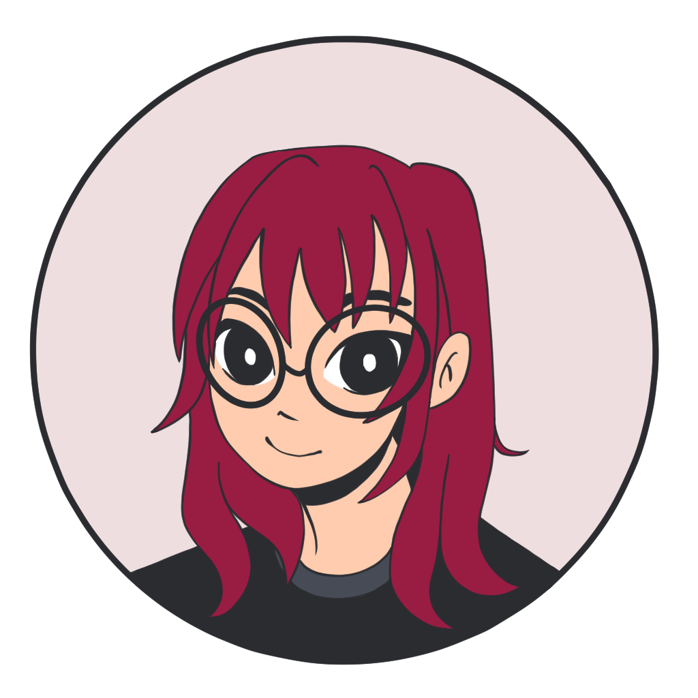

Languages: English (Fluent), Portuguese (Native), Japanese (Beginner)
I'm a Software Systems student at Simon Fraser University with a passion for combining technology, design, and creativity. Having explored a variety of creative mediums, including digital art, traditional art, 3D modelling, clay, and crochet, I enjoy bringing ideas to life through both technical and artistic approaches.
Through running my small hobby shop, AnicuteShop, I've developed an interest in product design, branding, and creating experiences that people genuinely enjoy. Today, I'm particularly interested in front-end development and UI/UX design, where I can combine creativity, design thinking, and technology to create engaging user experiences.